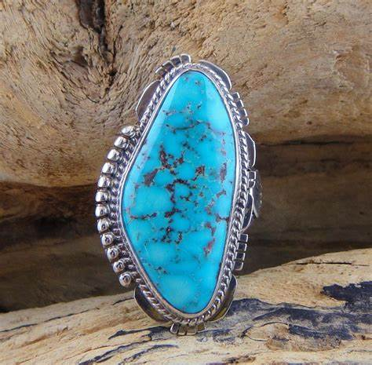

Turquoise: The Ancient Gemstone of Sky and Earth
Chemical Formula: CuAl₆(PO₄)₄(OH)₈·4H₂O (Hydrous Phosphate of Copper and Aluminum)
Color: Various (Sky Blue, Green, Blue-Green)
Hardness: 5-6 on the Mohs scale
Crystal System: Triclinic
Localities: Iran, United States, China, Egypt
Common Uses: Jewelry, Decorative Items, Carvings
Turquoise is one of the oldest and most cherished gemstones in history, revered for its stunning blue-to-green color and unique patterns. This semi-precious gemstone is a hydrous phosphate of copper and aluminum with the chemical formula CuAl₆(PO₄)₄(OH)₈·4H₂O. Turquoise has been valued for thousands of years by various cultures around the world, symbolizing protection, wisdom, and tranquility.
The name "turquoise" is derived from the French word "turquois," meaning "Turkish," because the stone was first brought to Europe through Turkey from mines in Persia (modern-day Iran). Known for its calming color and spiritual significance, turquoise has been used in everything from jewelry and amulets to religious artifacts and ceremonial objects. It is the birthstone for December, representing prosperity, success, and good fortune.
Formation and Types of Turquoise
Turquoise forms in arid regions as a secondary mineral in the weathering and oxidation zones of copper deposits. It is typically found in igneous or sedimentary rocks, often in association with minerals like chrysocolla, malachite, and azurite. The gemstone's color can vary from sky blue to green, depending on the amount of copper (which gives it the blue hue) and iron (which adds green tones) in its composition.
Persian Turquoise
Persian turquoise is known for its intense sky-blue color with minimal matrix. It is considered the finest quality turquoise and has been mined in Iran for over 2000 years.
Sleeping Beauty Turquoise
This variety comes from the Sleeping Beauty Mine in Arizona, USA. It is known for its pure robin's egg blue color with little to no matrix, making it highly prized in the jewelry market.
Spiderweb Turquoise
Spiderweb turquoise features intricate dark veining that resembles a spider's web. This matrix pattern is highly sought after by collectors and is found in several regions, including the American Southwest and China.
Chinese Turquoise
Chinese turquoise varies widely in color from light blue to green, often with a pronounced matrix. It is one of the most abundant sources of turquoise in the world.
Green Turquoise
Some varieties of turquoise are more green than blue due to higher levels of iron. These stones are often found in the same regions as traditional blue turquoise but have a distinct appearance.
Structure and Properties of Turquoise
Turquoise belongs to the triclinic crystal system and typically forms in microcrystalline masses rather than distinct crystals. It is known for its unique color and porous texture, which can influence its durability and appearance.
- Hardness: Turquoise has a hardness of 5 to 6 on the Mohs scale, making it relatively soft and porous. This softness means that turquoise can be susceptible to scratches and absorption of oils or other substances, which can alter its color over time.
- Color: The color of turquoise ranges from sky blue to green, with variations depending on the amount of copper and iron in the stone. The most prized turquoise is a bright robin's egg blue, often with minimal matrix.
- Luster: Turquoise exhibits a waxy to sub-vitreous luster when polished, giving it a smooth, matte appearance. High-quality turquoise has a slightly glossy surface that enhances its natural beauty.
- Clarity and Matrix: Turquoise is typically opaque, with some stones displaying a matrix, which is the host rock in which the turquoise forms. The matrix can appear as black, brown, or golden veins running through the stone, adding character and uniqueness.
Uses of Turquoise
Turquoise has been used for various purposes throughout history, from jewelry to symbolic and protective talismans:
Jewelry
Turquoise is one of the most popular gemstones for jewelry, particularly in Native American and Southwestern designs. It is used in rings, necklaces, earrings, bracelets, and belts, often set in silver to enhance its blue color. Turquoise cabochons and beads are especially popular, highlighting the stone's natural beauty.
Historical and Religious Artifacts
Turquoise has been used in various historical and religious artifacts, particularly in ancient Egypt, Persia, and Mesoamerica. The gemstone was often carved into amulets, masks, and other ceremonial objects, believed to bring protection and spiritual power.
Decorative Items
Due to its striking color, turquoise is also used in decorative items such as inlays, mosaics, and sculptures. It is often incorporated into home décor, including furniture, wall art, and ornamental objects.
Metaphysical Uses
Turquoise is considered a stone of protection, healing, and balance. It is believed to align the chakras, promote inner peace, and protect the wearer from negative energies. Turquoise is also associated with the throat chakra, enhancing communication and self-expression.
History of Turquoise
The history of turquoise is rich and spans several cultures and time periods:
- Ancient Egypt: Turquoise was highly valued in ancient Egypt, where it was mined in the Sinai Peninsula. The gemstone was often used in jewelry, amulets, and the famous burial mask of King Tutankhamun, symbolizing protection and immortality.
- Persia (Iran): Persian turquoise has been prized for its vibrant blue color for over 2000 years. It was considered a national treasure and was used extensively in Persian architecture, including the domes of mosques and palaces.
- Native American Cultures: Turquoise has been revered by Native American tribes for centuries, particularly the Navajo, Zuni, and Hopi. The gemstone is often used in jewelry and ceremonial objects, symbolizing sky and water, and is believed to bring protection, health, and happiness.
- Mesoamerica: The Aztecs and Mayans valued turquoise highly, using it to create masks, mosaics, and other ceremonial items. The gemstone was associated with the gods and was considered a symbol of power and wealth.
- Modern Times: Today, turquoise remains one of the most popular and sought-after gemstones, particularly in Southwestern and Native American jewelry. Its rich history and cultural significance continue to make it a symbol of protection and spiritual connection.
Unusual Varieties of Turquoise
In addition to the more common types, there are some unusual and rare varieties of turquoise:
Carico Lake Turquoise
This variety, found in Nevada, USA, is known for its bright lime green color, often with a brown spiderweb matrix. It is highly prized for its unique color and pattern.
Bisbee Turquoise
Mined in Arizona, USA, Bisbee turquoise is known for its deep blue color with a striking chocolate brown matrix. It is one of the most sought-after varieties of American turquoise.
Kingman Turquoise
Also from Arizona, Kingman turquoise is famous for its vibrant blue color and beautiful black matrix. It is one of the oldest and most productive turquoise mines in the United States.
Zuni Turquoise
Zuni turquoise refers to the variety of turquoise used by the Zuni people in their intricate inlay jewelry. It is often blue-green with a fine matrix, showcasing the craftsmanship of Zuni artists.
Enhancement of Turquoise
To enhance its appearance and durability, turquoise may undergo various treatments:
- Stabilization: Stabilization is the most common treatment for turquoise, involving the infusion of a polymer or resin into the stone to enhance its durability and prevent color changes. Stabilized turquoise is more resistant to scratches and absorption of oils, making it suitable for everyday wear.
- Dyeing: Some lower-quality turquoise may be dyed to enhance or change its color. This treatment is less common for high-quality stones but is used in mass-produced, inexpensive jewelry. Dyed turquoise should be disclosed as it is less valuable than natural or stabilized stones.
- Reconstitution: Reconstituted turquoise is made by grinding small pieces of turquoise into a powder, which is then mixed with a binding agent and formed into blocks. These blocks are cut and polished into beads or cabochons. Reconstituted turquoise is often used in lower-cost jewelry and should be clearly identified.
- Impregnation: Impregnation involves filling the pores of turquoise with a colorless substance such as wax or plastic to improve its appearance and durability. This treatment is similar to stabilization and is used to protect the stone from environmental damage.
Famous Finds and Turquoise
Turquoise has been discovered in various parts of the world, with some famous finds being particularly notable:
The Aztec Turquoise Mask
The Aztec Turquoise Mask is one of the most famous turquoise artifacts, created by the Aztecs as a representation of the god Xiuhtecuhtli. The mask is adorned with pieces of turquoise and other precious materials, symbolizing the god's power and authority.
The Pharaoh's Turquoise Jewelry
The burial treasures of Egyptian pharaohs, including King Tutankhamun, feature extensive use of turquoise in the form of jewelry, amulets, and inlays. These artifacts are now displayed in museums around the world, showcasing the ancient Egyptians' reverence for the gemstone.
The Persian Turquoise Throne
The Peacock Throne of the Persian emperors was adorned with large quantities of Persian turquoise, highlighting the gemstone's importance in Persian culture. The throne is one of the most famous examples of turquoise used in royal adornments.
The Blue Moon Necklace
A stunning piece of modern jewelry, the Blue Moon Necklace features a large piece of Sleeping Beauty turquoise set in platinum and surrounded by diamonds. This necklace has gained fame for its exquisite design and the quality of the turquoise used.
Sourcing Locations and Mining
Turquoise is sourced from several key locations around the world, each known for producing stones with distinct characteristics:
- Iran (Persia): Iran has been a major source of turquoise for over 2000 years, particularly from the Nishapur region. Persian turquoise is known for its pure sky-blue color and minimal matrix, making it some of the most valuable turquoise in the world.
- United States: The Southwestern United States, particularly Arizona, Nevada, and New Mexico, is a significant source of turquoise. American turquoise varies widely in color and matrix, with varieties like Sleeping Beauty, Kingman, and Bisbee being highly prized.
- China: China is one of the largest producers of turquoise, with mines located in the Hubei Province. Chinese turquoise varies in color from light blue to green and often features a pronounced matrix. It is commonly used in both fine and mass-produced jewelry.
- Egypt: Egypt's Sinai Peninsula has been a source of turquoise since ancient times. The turquoise from this region is typically greenish-blue and was highly valued by the ancient Egyptians for use in jewelry and ceremonial objects.
Exploration and Mining
The exploration and mining of turquoise involve locating suitable deposits and extracting the stone with care:
Exploration
Geological surveys and sampling are conducted to locate turquoise deposits, typically in arid regions with copper deposits. Traditional prospecting methods, such as surface exploration and test drilling, are used to identify potential mining sites.
Mining Methods
Turquoise is typically mined using open-pit or underground mining techniques, depending on the depth of the deposit. In the Southwestern United States, many turquoise mines are small-scale operations, often run by individual miners or families. The gemstone is carefully extracted by hand to preserve its quality and prevent damage.
Processing
After extraction, turquoise is cleaned, sorted, and graded based on its color, matrix, and overall quality. The stone is then cut and polished into cabochons, beads, or other shapes for use in jewelry or as collector specimens.
Identifying Authentic Turquoise
Identifying authentic turquoise involves examining several key characteristics:
- Color: Authentic turquoise ranges from sky blue to green, with the most valuable stones displaying a bright robin's egg blue color. The color should be even and consistent, with minimal discoloration or fading.
- Matrix: The matrix in turquoise can vary widely, from fine spiderweb patterns to larger irregular veins. Authentic turquoise often displays a natural matrix, though the absence of matrix can also indicate a high-quality stone, such as Persian or Sleeping Beauty turquoise.
- Testing Methods: Common tests for authenticity include checking the stone's hardness (5-6 on the Mohs scale) and examining it under a loupe to identify any characteristic inclusions or patterns. Turquoise should have a natural, consistent color and texture.
- Certification: High-quality turquoise, particularly rare varieties like Persian or Bisbee turquoise, may come with a certificate of authenticity from a reputable gemological laboratory. This certification provides detailed information about the stone's characteristics and any treatments.
Buy & Sell Authentic Turquoise Here
Cutting and Polishing Turquoise
Cutting and polishing turquoise is a skilled process that enhances the stone's natural beauty:
- The Cutting Process: Turquoise is typically cut into cabochons, beads, or inlays to showcase its color and matrix. The cutter must carefully plan the cut to avoid weak spots and maximize the stone's aesthetic appeal.
- Polishing: After cutting, turquoise is polished to a smooth finish using fine abrasives. The polishing process enhances the stone's luster and color, giving it a smooth, waxy surface.
- Carving: Turquoise is also used for carving intricate designs, such as figurines, small sculptures, and ornamental objects. Skilled artisans can create detailed carvings that highlight the stone's unique color and matrix patterns.
Turquoise Market and Trade
The market for turquoise is influenced by several factors, including quality, origin, and demand:
- Value Determinants: The value of turquoise is determined by its color, matrix, and overall quality. Stones with a bright, even blue color and minimal matrix are the most valuable. Persian and Sleeping Beauty turquoise are particularly prized for their color and quality.
- Global Trade: Iran, the United States, and China are the leading producers of turquoise. The global trade of turquoise is driven by demand from jewelers, collectors, and enthusiasts who value the stone for its unique beauty and cultural significance.
- Market Trends: Turquoise continues to be popular in jewelry and decorative arts, particularly in Southwestern and Native American designs. The demand for ethically sourced turquoise is increasing, particularly as consumers become more aware of the conditions in which the gemstone is mined. High-quality, untreated turquoise is especially sought after in the global market.
Buy & Sell Authentic Turquoise Here
Caring for Turquoise
Turquoise requires proper care to maintain its beauty and prevent damage:
- Cleaning: Clean turquoise with a soft, damp cloth. Avoid ultrasonic cleaners, harsh chemicals, and prolonged exposure to water, as these can damage the stone's surface or cause it to absorb moisture. Turquoise should not be exposed to extreme temperatures or direct sunlight for extended periods, as this can cause the color to fade.
- Storage: Store turquoise separately from harder gemstones to prevent scratches. Keep it in a soft pouch or lined jewelry box to protect it from dust, moisture, and abrasion.
- Handling: Turquoise is relatively soft and porous, making it prone to scratches, chips, and discoloration. Handle it with care, especially when wearing or cleaning jewelry. Avoid exposing turquoise to oils, perfumes, and lotions, as these can be absorbed by the stone and alter its color.
- Repolishing: Over time, turquoise may lose its luster due to wear and tear. Professional repolishing can restore the stone's shine and enhance its appearance.
Metaphysical Properties of Turquoise
Turquoise has been attributed with various metaphysical properties throughout history:
- Protection and Healing: Turquoise is often associated with protection and healing. It is believed to ward off negative energies, promote emotional balance, and enhance physical well-being. The stone is also thought to aid in the healing of ailments and strengthen the immune system.
- Communication and Truth: Turquoise is considered a stone of communication and truth. It is believed to enhance self-expression, promote honest communication, and encourage the release of inhibitions and fears.
- Spiritual Growth: Turquoise is often used in meditation and spiritual practices. It is said to help the wearer connect with higher realms of consciousness, promote inner peace, and enhance spiritual growth.
- Throat Chakra: Turquoise is associated with the throat chakra, making it a popular choice for those seeking to enhance their communication skills, self-expression, and truthfulness. It is believed to balance the throat chakra and promote clear and honest communication.
See Also
- Related Crystals and Gemstones: Lapis Lazuli, Chrysocolla, Malachite
- Relevant Topics: Turquoise Cutting, Historical Uses of Turquoise, Ethical Sourcing of Gemstones